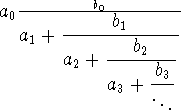
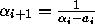

|
Continuously Growing Fractions |
Though many programming languages don’t support “Recursion”, it is still very important topic in programming theories. I think the idea of “Recursion” came from the “iterative process” which is playing a major role in the chapters of “Numerical Methods”!
Now let’s see its application in number theory – especially in the field of “Continued Fractions” (CF).
The origin of continued fractions is very difficult to pinpoint as we can find examples of these fractions throughout mathematics in the last 2000 years, but its true foundations were not laid until the late 1600's, early 1700's. But traditionally its origin is said to be occurred at the time of the great geometrician Euclid. For more than a thousand years, any work that used continued fractions was restricted to specific examples. The Indian mathematician Aryabhata used a continued fraction to solve a linear indeterminate equation. Throughout the history of Greek and Arab mathematical writings we can also find examples and traces of continued fractions. But its use was also limited to specifics.
A formal definition of CF:

is said to be a
continued
fraction. The values of a1,
a2, a3,... and b1 , b2, b3,...
can be either real or complex values. There can be either an infinite or a
finite number of terms. A continued fraction can be created from any number
alpha by using the following recursive algorithm.

where alpha1 = alpha. The sequences of ai's are the terms of the continued fraction.
There are four kinds of continued fractions. Infinite, where the terms just go on for ever, and finite continued fraction, where there are only a fixed number of terms. And those two can be of one of two types, regular (sometimes called simple), and irregular (sometimes called complex). The regular type always has a one in the numerator. The irregular type can have other whole numbers there.
Here we are talking about the regular finite continued fraction that can be said as:
A continued fraction is an expression of the form,
A = a_0 + 1/c_0
where
c_0 = a_1 + 1/c_1
c_1 = a_2 + 1/c_2
.
.
.
If the process stopped at, say,
c_n = a_(n+1) + 1/c_(n+1)
then we would have regular a finite continued fraction.
Now for any fraction of the form P/Q (P and Q are whole numbers) expressing it in the form of a regular finite continued fraction as follows:
where a, b, c, d, e, etc are all whole numbers.
In every line of input you are given the integers P and Q and as output you have to present the regular finite continued fraction of P/Q in the following format. There may be at most 2000 digits in both P and Q.
P/Q = a+1/{b+1/{c+1/{d+...}}}
103 24
021 73
103/24 =
4+1/{3+1/{2+1/{3}}}
21/73 = 0+1/{3+1/{2+1/{10}}}

"It was once said that God invented the integers and man invented everything else. It might be added God probably invented continued fractions as well."
~~~ Mark Herkommer.